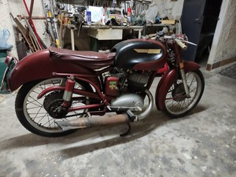
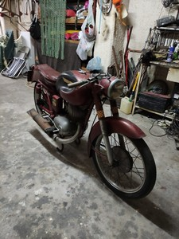
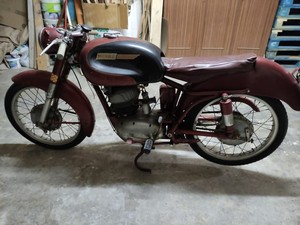

|
Motociclo
MI-VAL 175 cc S/30 - 1955
|
Esemplare conservato di Angelo - Augusta (SR)
La moto ha percorso meno di 300 km!
Cliccare sulle immagini per ingrandire
|  |
 |
 |
Cliccare sulle immagini per ingrandire